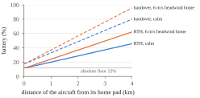
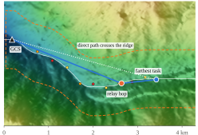
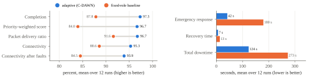
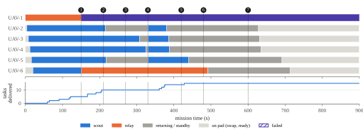
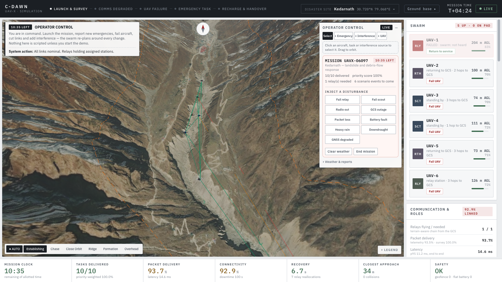

Mountain valleys are hard places to keep a radio link alive. A 900 MHz link with half a watt of power reaches tens of kilometres in open air, but in the Mandakini or Bhagirathi valleys a single spur of rock can take 40 dB out of it. Add a battery that lasts a quarter of an hour, a valley wind that makes the flight home twice as slow as the flight out, and the ordinary ways a field deployment goes wrong (an aircraft goes down, a radio dies, somebody's generator starts spraying noise across the band), and the problem the UAV-X brief describes becomes clear. The fleet has to survey every reported site and keep talking to the GCS the whole time, and it has to do this without anyone telling it what has just broken.
We treat communication as part of the mission, not a side condition. A site only counts as done when its imagery has reached the GCS, so the swarm is scored on exactly what the responders need. Every decision in the stack, from which aircraft to send to where the relays should hover, is made with the link home in mind.
This report describes what we built and how it performs. Our main contributions are:
Area and GCS. The affected area is a valley corridor about 4.2 km long inside a 5.1 × 5.1 km terrain tile. The GCS is a fixed ground node at the valley mouth with its antenna on a 10 m mast and a row of landing and charging pads. It cannot fail or run flat, it is where every packet is going, and every aircraft starts and ends its sorties on one of its pads.
Fleet. Five or six identical 1.9 kg quadrotors with a 900 MHz mesh radio (27 dBm, 3 dBi). Hover endurance is about 18 minutes and cruise about 15. A battery swap takes up to two minutes on the pad. Roles are not fixed: an aircraft can be a scout, a relay, or on standby (flying home, or waiting on the pad).
Tasks. Each survey task p has a position, a priority πp ∈ {1, 2, 3} with weight wp = 3, 2, 1, and a release time. Tasks released after launch are the "newly emerging" ones; the swarm cannot see them before they are reported. A task is surveyed after a two-second dwell within 30 m, and delivered when all 12 chunks of its data have arrived at the GCS.
Constraints. A mission clock (12 or 15 minutes in our scenarios), a polygon geofence with an AGL ceiling, at least 3 m between aircraft, and a battery that must never run out in the air. We read "complete the mission safely and within the allotted time" strictly: every aircraft has to be back on a pad by the deadline.
| The swarm must | What C-DAWN does | Where | Measured as |
|---|---|---|---|
| Survey all assigned locations | Assign a task only if the aircraft can reach it, survey it and get home inside its battery and the clock; greedy on priority weight per second of travel. | sim/guidance.py sim/energy.py | completion rate and time, priority-weighted score |
| Maintain end-to-end comms with the GCS | GCS as a fixed node; relay chain sized from the terrain; GNN placement; SCM-aware routing; packet-level store-and-forward. | mesh/roles.py mesh/traffic.py | PDR, latency, availability, downtime |
| Dynamically assign relays | Relay count re-planned every second; launch from pads first, otherwise promote the scout doing the least valuable work. | mesh/roles.py | relay reallocations, reconfiguration efficiency |
| Reconfigure on degradation, failure or recharge | Heartbeat-based failover; interference localised and routed round; make-before-break relay handover; lost-link failsafe. | mesh/election.py mesh/awareness.py | recovery time, performance after failures |
| Prioritise new high-priority regions | A new P1 task pre-empts the best-placed scout on lower-priority work; standby scouts; discretionary returns turned round. | sim/guidance.py | emergency response time, weighted score |
| Finish safely, on time | Energy-aware return home; home before the deadline; geofence projection on every setpoint; predictive separation; sequenced take-offs. | sim/deconfliction.py sim/world.py | collisions, minimum separation, flat batteries, geofence breaches |
Everything runs in one Python process on one simulated clock. The live dashboard, the three-laptop demonstration and the headless benchmark all call the same step(), so the numbers we report come from exactly the code a judge would watch. Fig. 2 shows the layers. The part we care most about is the dashed line in the middle. Below it is the simulator, which knows everything. Above it is the autonomy, which only knows what its sensors and its radio tell it.
Terrain. Each site is a 5.1 km terrain pack with a 5 m elevation grid built from AWS Open Data terrain tiles (SRTM and Copernicus derived) and Sentinel-2 cloudless imagery [9, 10]. We ship four real disaster sites, Kedarnath (2013 debris flow), Uttarkashi (the 1991 earthquake area), Joshimath and Chungthang, plus a procedural valley for repeatable tests. The mission corridor is found by dynamic programming along the valley floor.
Flight. An underactuated multirotor model with attitude lag, slew limits and airspeed drag, flown by a cascaded PID. Wind follows a power-law shear on height above ground (exponent 0.16) with Dryden turbulence and gusts [8].
Radio. Every tick, every pair of aircraft and every aircraft-to-GCS link gets a link budget:
where Lfs is Friis free-space loss [2], Lx is extra loss (wet antennas in rain) and J(v) is the ITU-R P.526 single knife-edge diffraction loss over the worst ridge on the path [1]. Here h is how far the ridge pokes above the straight radio path, and d1, d2 are its distances to the two ends:
Packet delivery ratio is averaged over a burst of 24 packets, each with its own Rician fade (K = 6 dB). We learnt early that a single fading draw per tick makes a perfectly steady link look like it is flapping, which confused both routing and the causal engine.
Before the individual pieces, it helps to see one aircraft's life (Fig. 3). It starts charged on a pad, launches as a scout or a relay, may swap roles in the air, and eventually comes home for one of five reasons. It lands, has its battery swapped, and waits until the role manager needs it again. Everything below decides when one of these arrows is taken.
Every decision that sends an aircraft away from the GCS has to be affordable, so the energy model answers three questions: how much battery it takes to get home from here, whether a task can be done and still leave enough to get home, and when a relay has to call for its replacement. Drain follows the airframe's own law, scaled by a factor k̂ that each aircraft measures from its battery current:
with fT the thrust fraction, ŵ the estimated wind at cruise height and û the direction of travel. Leg time is T(a,b) = 1.15|ab|/vg + 25 s. The return-home and handover thresholds then follow directly, with a safety factor s = 1.2 and an 8% landing reserve:
Here p is where the aircraft is, h its home pad, g the GCS and q a relay's station. The point of Eqs. (4) and (5) is that there is no fixed "come home at 22%" rule. A relay four kilometres up the valley with the wind in its face turns for home at about 62%, one next to the GCS at 12%. Fig. 4 shows the curves.

Allocation is greedy on value rate. At each step we take the (scout, task) pair with the largest
The 60 s term stops a very close P3 task from always beating a P1 task a little further away. When a P1 task arrives and no idle scout can take it, the best-placed scout on lower-priority work is pre-empted, unless it is already hovering over its target. Idle scouts with a healthy battery loiter at a standby point mid-valley, inside relay cover, so the next emergency is minutes closer. A scout that is flying home only because it had nothing to do can be turned round. Fig. 5 is the whole loop.
This is the piece we are proudest of, because it replaces a guess with a measurement of the mountain. Once a second the role manager collects the points where work is happening: scouts on task, open reachable tasks, aircraft carrying undelivered data, and aircraft still flying home. For the farthest of them it walks the chain in Algorithm 1.
The 15 dB target is roughly the 9 dB a 256-byte frame needs for 95% delivery, plus fading margin. On the Kedarnath scenario the walk gives exactly one relay (Fig. 6). The valley turns south past the 2 km mark and a spur blocks the straight line from the GCS to the far sites.

The requirement then drives assignment. When there are fewer relays than needed, a charged aircraft on a pad is launched first, because it arrives with a full battery. Failing that, the scout doing the least valuable work that is closest to the missing hop is promoted, and at least one scout always keeps surveying. When there are more relays than needed for 25 s, the spare goes back to surveying, or home if there is nothing to survey. Every change is logged as a reallocation with its reason; one that is undone within 30 s counts as a flap against reconfiguration efficiency.
The role manager decides how many relays and who flies them; the placement network decides where. An E(3)-equivariant graph network [3] proposes stations in one forward pass, then 20 Adam steps on a differentiable version of Eq. (1), with terrain sampled by grid_sample, polish them. The hop points from Algorithm 1 are the starting anchors. On 48 held-out layouts over six unseen terrains, connectivity went from 0.48 (naive) to 0.58 with the network alone and 0.66 after refinement, in about 1.4 ms plus 21 ms. We should be honest that the refinement does most of the work. The network's real job is giving it a good place to start.
Batteries are the reason relays leave, and a naive swarm pulls the relay home and then notices the hole. We do it the other way round (Fig. 7). When a relay's battery reaches Bho from Eq. (5), the role manager launches a charged aircraft from the pads, or promotes a scout, and sends it to the relay's exact station. The outgoing relay is taken out of the placement plan and holds where it is. It leaves only once the replacement is holding station. If something goes wrong and its own return threshold arrives first, it comes home anyway. Safety beats coverage.
Failover. Each aircraft's radio is "heard" when anyone, another aircraft or the GCS, measures a usable link to it. A relay nobody has heard for 200 ms is treated as failed and the best-scoring scout (battery times mean link quality) is promoted into its slot. The router recomputes at once. Detection dominates the latency, as Fig. 8 shows: in our logged runs the whole thing, from the relay going silent to traffic flowing on the new route, took 200 to 300 ms. Nothing that still works is ever demoted. The old election re-ranked the whole swarm on every failure, and we saw a healthy relay get pushed out of its role because of it.
Routing. Dijkstra on −log(PDR), blended with a stability estimate from the causal layer, with the GCS as a node in the graph [4].
Traffic. Packets actually move. Every airborne aircraft sends telemetry at 2 Hz (dropped once stale, after 2 s), and each surveyed site produces 12 chunks of imagery and situational data. Each hop is tried up to four times, and every try costs airtime, so a bad link shows up as latency before it shows up as loss. Survey chunks are delay-tolerant [7]: with no route they wait in custody on whichever aircraft holds them, and an aircraft that lands hands its backlog to the GCS over the wire. Every delivered packet is acknowledged, and those acknowledgements are the only way an aircraft knows it still has a link home. Sixty seconds without one triggers the lost-link return. Fig. 9 shows the three ways survey data can travel.
Every setpoint is projected at least 40 m inside the geofence polygon and under the AGL ceiling before the controller sees it. Separation assurance predicts each pair's closest point of approach over the next four seconds. If the predicted miss is under 30 m (8 m near the pads), it pushes the pair apart in proportion to the intrusion and splits them vertically, then re-applies the fence and the terrain floor. Take-offs from the pads are spaced four seconds apart. Across all 24 benchmark runs there were no collisions, no geofence violations, no terrain strikes and no aircraft that ran flat.
A simulator makes cheating easy. The first version of this code, like a lot of swarm demos, read the injected fault directly: "if this drone is marked dead, re-elect". That makes a fault look handled when a real swarm would still be finding out about it. We went back and removed every such path. A disturbance now changes the physics or the radio and nothing else. No flag is set and no callback fires. Table 2 lists what the swarm actually sees.
| Disturbance | Evidence the swarm has | What it concludes |
|---|---|---|
| UAV failure | No one hears it for 200 ms | Failover; task released after 5 s; its data written off after 20 s |
| Radio outage | Same silence; its own packets go unacknowledged | Treated as a failure; the aircraft comes home after 60 s and rejoins when heard |
| Interference zone | Receiver noise readings; direction-finding bearings | Source cross-fixed; the estimate enters relay planning |
| Area-wide RF drop, packet loss, link cut | Noise floor rises everywhere; link measurements fall | Chain re-sized; routes and relays re-planned |
| Battery or motor fault | Current draw above what the thrust should need | Drain factor k̂ rises; earlier return, fewer tasks accepted |
| Heavy rain | RSSI below the map's prediction; camera loses the ground | Extra path loss planned for; ceiling set by flying into cloud |
| GNSS drift | Radio ranging to other aircraft and to the GCS disagrees with GNSS | Terrain-relative navigation after 2 s |
| New emergency | The report reaches the GCS | Tasking, pre-emption, chain extended |
One consequence surprised us at first and then seemed obviously right. A relay whose radio fails and a relay that crashes look identical from the outside, so the swarm handles both the same way. When the radio comes back, the aircraft is heard again, rejoins, and the role manager notices it has one relay too many. A test file audits the autonomy modules' source code for any read of simulator state, and 20 behavioural tests check that each disturbance is noticed rather than announced.
Honesty cost us a little. When we switched the energy model from the true wind to the swarm's own estimate, completion dropped from 98.4% to 93.5%. The cause was a calibration fitted against ground-level wind, while the swarm now measures the stronger wind at cruise height. Refitting airspeed against the same logged flights brought it back to 97.3%.
A scenario is a JSON file that fixes the terrain, seed, fleet, GCS, geofence, tasks, clock and a timeline of hidden disturbances. Positions can be given in metres or as a fraction along the valley, so one scenario works on any site. The disturbance types cover everything the Stage 2 brief lists. Table 3 summarises the four we ship.
| Scenario | UAVs | Tasks | Clock | Hidden events |
|---|---|---|---|---|
| Quickstart, synthetic valley | 5 | 8 + 1 | 12 min | 4 |
| Kedarnath landslide | 6 | 10 + 6 | 15 min | 8 |
| Uttarkashi earthquake | 5 | 9 + 6 | 15 min | 7 |
| Stress, synthetic valley | 5 | 8 + 7 | 15 min | 11 |
The baseline keeps everything except the adaptive role layer: same flight control, energy-aware return, geofence, relay placement network and packet model. Roles are fixed at launch, one relay and the rest scouts, and aircraft relaunch in their original role. A failed relay is not replaced, a new P1 task waits for a free scout, nothing hands over and no one stands by. The gap between the two is what the adaptive autonomy is worth. Each scenario runs with three seeds, which vary radio fading, packet outcomes and, in the stress scenario, task placement.
Metrics follow the brief's categories. The priority-weighted score is
where δp = 1 if task p's data reached the GCS by the deadline. The rest are defined in Table 4. They are computed from the simulation itself, and never from what the swarm believes.
| Group | Metric | Definition |
|---|---|---|
| Mission | completion rate | tasks whose data reached the GCS before the deadline, over tasks released |
| emergency response | release of a new task to its data arriving at the GCS | |
| Comms | packet delivery ratio | delivered over generated, telemetry and survey data together |
| latency | creation to arrival at the GCS, per telemetry packet | |
| availability, downtime | airborne time with (and without) an end-to-end path of reliability ≥ 0.5 | |
| Autonomy | reallocations | every role change, logged with its reason |
| recovery time | disruption until every airborne aircraft has had a path for 1 s; zero if none lost it | |
| reconfiguration eff. | 1 minus the share of role changes undone within 30 s | |
| Robustness | after faults | availability and PDR from the first disruption on |
| Safety | collisions, separation | pairs closer than 3 m (per incident); closest approach |
| charge, geofence | aircraft that ran flat; excursions outside the polygon or ceiling |
Fig. 10 compares the two strategies over all 12 runs each. The adaptive swarm is ahead on every mission and communication metric. The biggest gap is how quickly a new emergency gets answered: 42 s against 180 s, because the baseline has to wait for a scout to become free while ours pre-empts one or turns one round. Downtime and recovery time are both roughly halved, because the chain is re-sized and re-staffed instead of being left as it was launched.


| Scenario | Compl. | PDR | Avail. | Recov. | Min batt. |
|---|---|---|---|---|---|
| Quickstart | 100.0% | 95.4% | 93.9% | 4.6 s | 24.1% |
| Kedarnath | 93.8% | 97.2% | 95.8% | 8.9 s | 10.5% |
| Uttarkashi | 100.0% | 100.0% | 100.0% | 0.0 s | 29.4% |
| Stress | 95.6% | 94.3% | 91.5% | 13.3 s | 21.3% |
Table 5 breaks the adaptive numbers down, and Fig. 11 follows one Kedarnath run from start to finish. Three observations stand out. Uttarkashi is a draw with the baseline. The Bhagirathi valley there is straight and open, one relay covers everything, and adaptation has little to win, which is what it should look like. The stress scenario is the hardest on communication, and its 13 s mean recovery is dominated by a 60 s severed link and a 25 s GCS outage that no amount of re-planning can fix, only wait out. Finally, the adaptive swarm flies its batteries harder, down to 10.5% in Kedarnath against 34% for the baseline on average. That is still above the 8% landing reserve, and it is the price of keeping aircraft working instead of parking them.
We think a report is more useful when it says what went wrong. Our first energy model was about 1.8 times too pessimistic and sent full-battery scouts home before they had done anything. Tasks were once left assigned to a scout that had died, so nobody else picked them up. The liquid time-constant controller [5] we originally proposed to fly the aircraft lost to a well-tuned cascaded PID in 16 of 16 paired gust trials (0.62 m against 0.18 m cross-track error), so the PID flies and the LTC runs in shadow. The causal link diagnosis [6] never blames terrain for interference, but it confirms genuine terrain shadow only about 20% of the time. The geometry is against it: climbing one end of a link lifts the path over a far ridge by very little.

The code is Python 3.10+ with PyTorch for the placement network, FastAPI and WebSockets for the GCS server, and React with Three.js for the console. Nothing needs a GPU or an internet connection once installed: terrain packs and trained weights ship in the repository. Three commands cover what a judge needs.
# watch a mission live in the console python run_node.py --autostart \ --scenario kedarnath_landslide # one headless run, 5 to 9x real time python run_scenario.py \ scenarios/uttarkashi_earthquake.json # all scenarios, 3 seeds, both strategies python -m bench.uavx_suite
For a live demonstration the same code can be split across three laptops on one Wi-Fi network (Fig. 13). This is not three copies of one screen: work really moves between machines, and it moves back if a machine goes quiet.
Every run writes a standard log set: run metadata with the code version, the resolved scenario, an event stream, 1 Hz aircraft state and link tables, a per-packet log and the metrics. When the organisers publish their log format, one module, mission/recorder.py, is the adapter point. There are 158 automated tests, covering the physics, the radio model, the placement network's equivariance, failover, handover, traffic, every disturbance type and the truth-boundary audit.
This is a simulation. C-DAWN runs on its own Python simulator, which the brief allows as an equivalent to PX4, Gazebo or ns-3, because it lets terrain, radio and flight share one model. The autonomy only ever talks to an aircraft through setpoints, so for Stage 2 we plan a PX4 SITL and ROS 2 bridge that replaces the physics and controller hooks and leaves the autonomy untouched. Three other things are on the list: a contention-aware MAC model, since today airtime is modelled per hop but not shared; the organisers' log format; and position estimation from a proper filter rather than the true position plus an injected GNSS offset. Air density does not change with altitude yet. Survey detections come from each site's category rather than from imagery, and the situation reports are templates.
A swarm that surveys a disaster valley is only useful if what it sees gets home. By treating the link to the GCS as part of the mission, sizing the relay chain from the terrain, handing relay stations over before a battery forces the issue, and making the swarm find out about trouble the way a fielded one would, C-DAWN delivered 97% of its tasks through 30 hidden disturbances without losing an aircraft to its own planning. The next step is putting the same autonomy on PX4 and, after that, on real airframes.